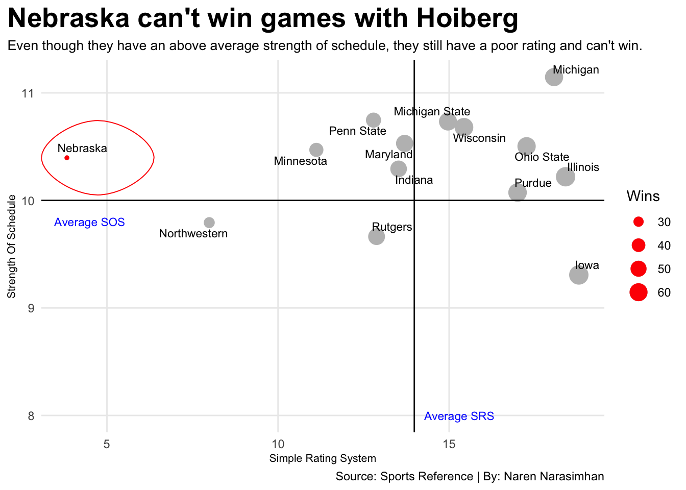

Does Nebraska basketball belong in the Big Ten after hiring Fred Hoiberg?
huskers
code
analysis
Author
Naren Narasimhan
Published
October 31, 2022
This is a post about the Nebraska men’s basketball team after they hired coach Fred Hoiberg and adressing if they should still be in the Big Ten? The Big Ten basketball team needs to get better and we need to get more wins. How can we win more games?
Code
library(tidyverse)library(zoo)library(ggbump)library(ggrepel)library(ggalt)collegebasketball2019 <-read_csv("collegebasketball2019")collegebasketball2020 <-read_csv("collegebasketball2020")collegebasketball2021 <-read_csv("collegebasketball2021")bigtenbasketball2019 <- collegebasketball2019 %>%mutate(Season =2019 )bigtenbasketball2020 <- collegebasketball2020 %>%mutate(Season =2020 )bigtenbasketball2021 <- collegebasketball2021 %>%mutate(Season =2021 )allmydata <-bind_rows(bigtenbasketball2019, bigtenbasketball2020, bigtenbasketball2021)bigtenbasketball <- allmydata %>%rename(totalwins = W...4,totalloses = L...5,conferencewins = W...7,conferenceloses = L...8,homewins = W...9,homeloses = L...10,awaywins = W...11,awayloses = L...12,teampointspergame = PTS...35,opponentpointspergame = PTS...36 )nu <- bigtenbasketball %>%filter(School =="Nebraska")il <- bigtenbasketball %>%filter(School =="Illinois")iw <- bigtenbasketball %>%filter(School =="Iowa")nu2021 <- bigtenbasketball %>%filter(School =="Nebraska"& Season ==2021)nu2019 <- bigtenbasketball %>%filter(School =="Nebraska"& Season ==2019)il2021 <- bigtenbasketball %>%filter(School =="Illinois"& Season ==2021)il2019 <- bigtenbasketball %>%filter(School =="Illinois"& Season ==2019)ggplot() +geom_line(data=bigtenbasketball, aes(x=Season, y=Rk, group=School), color="grey") +geom_point(data=bigtenbasketball, aes(x=Season, y=Rk, group=School), color="grey") +geom_line(data=nu, aes(x=Season, y=Rk, group=School), color="red") +geom_point(data=nu, aes(x=Season, y=Rk, group=School), color="red") +geom_line(data=il, aes(x=Season, y=Rk, group=School), color="orange") +geom_point(data=il, aes(x=Season, y=Rk, group=School), color="orange") +geom_text(data=nu2021, aes(x=Season +0.3, y=Rk, label=School)) +geom_text(data=nu2019, aes(x=Season-0.3, y=Rk, label=School)) +geom_text(data=il2021, aes(x=Season +0.2, y=Rk, label=School)) +geom_text(data=il2019, aes(x=Season -0.2, y=Rk, label=School)) +scale_x_continuous(breaks=c(2019, 2021), limits=c(2018.5,2021.5)) +scale_y_reverse(breaks=c(1,2,3,4,5,6,7,8,9,10,11,12,13,14)) +labs(x="",y="Big Ten Ranking",title="Nebraska is consistenly last, and Illinois is still staying on top",subtitle="Almsot all the other teams improved in their ranking from past seasons, except the Huskers",caption="Source: Sports Reference | By: Naren Narasimhan" ) +theme_minimal() +theme(plot.title =element_text(size =16, face ="bold"),axis.title =element_text(size =8),plot.subtitle =element_text(size=10),panel.grid.minor =element_blank(),plot.title.position ="plot" )
BUBBLE CHART. This post will have a lot of random stuff in here.
Code
bubble <- bigtenbasketball %>%group_by(School) %>%summarise(averageSRS =mean(SRS),averageSOS =mean(SOS),Wins =sum(totalwins) )ne <- bubble %>%filter(School =="Nebraska")ggplot() +geom_point(data=bubble, aes(x=averageSRS,y=averageSOS, size=Wins),color="grey") +geom_point(data=ne, aes(x=averageSRS,y=averageSOS, size=Wins),color="red") +geom_vline(xintercept =13.98262) +geom_hline(yintercept =10,32548) +geom_text_repel(data=bubble,aes(x=averageSRS, y=averageSOS, label=School), size=3) +geom_encircle(data=ne, aes(x=averageSRS+.9, y=averageSOS), s_shape=.01, expand=.000001, colour="red") +geom_text(aes(x=4.5, y=9.8, label="Average SOS"), size=3, color="blue") +geom_text(aes(x=15.3, y=8, label="Average SRS"), size=3, color="blue") +labs(x="Simple Rating System",y="Strength Of Schedule",title="Nebraska can't win games with Hoiberg",subtitle="Even though they have an above average strength of schedule, they still have a poor rating and can't win",caption="Source: Sports Reference | By: Naren Narasimhan") +theme_minimal() +theme(plot.title =element_text(size =20, face ="bold"),axis.title =element_text(size =8),plot.subtitle =element_text(size=10),panel.grid.minor =element_blank(),plot.title.position ="plot" )

STACKED BAR CHART
Code
stack <- bigtenbasketball %>%group_by(School) %>%summarise(fieldgoalpercent =mean(`FG%`),efficientfieldgoalpercent =mean(`eFG%`) )stacked <- stack %>%select( School, fieldgoalpercent, efficientfieldgoalpercent )stackedwide <- stacked %>%pivot_longer(cols=c("fieldgoalpercent", "efficientfieldgoalpercent"),names_to="Type",values_to="percent")ggplot() +geom_bar(data=stackedwide, aes(x=reorder(School, percent), weight=percent, fill=Type)) +coord_flip() +scale_fill_manual(values =c("red", "orange"), labels=c("Efficient field goal%", "Field goal%")) +labs(x="",y="Percentage",title="Hoiberg's famed shooting offense doesn't work for Nebraska",subtitle="The Huskers have had one of the worst overall shooting percentages in the Big Ten in the last three years",caption="Source: Sports Reference | By: Naren Narasimhan") +theme_minimal() +theme(plot.title =element_text(size =16, face ="bold"),axis.title =element_text(size =8),plot.subtitle =element_text(size=10),panel.grid.minor =element_blank(),plot.title.position ="plot")
DUMBELL CHART
Code
dumbell <- bigtenbasketball %>%group_by(School) %>%summarise(offensiverating =mean(ORtg),defensiverating =mean(DRtg) )ggplot() +geom_dumbbell(data=dumbell, aes(y=reorder(School, offensiverating), x=offensiverating, xend=defensiverating),size =2,colour ="grey",colour_x ="green",colour_xend ="red") +labs(x="Offensive Rating (Green) vs. Defesnive Rating (Red)",y="",title="The Huskers have the worst offesnive and defensive rating",subtitle="Nebraska and Northwestern are the only teams in the Big Ten that have their offensive and defesnive ratings inverted",caption="Source: Sports Reference | By: Naren Narasimhan") +theme_minimal() +theme(plot.title =element_text(size =16, face ="bold"),axis.title =element_text(size =8),plot.subtitle =element_text(size=10),panel.grid.minor =element_blank(),plot.title.position ="plot")